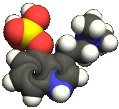

The Wu Li Masters know that science and religion are only dances, and that those who follow them are only dancers. The dancers may claim to follow 'truth' or claim to seek 'reality' but the Wu Li Masters know better. They know that the true love of all dancers is dancing. |
I dislike the drug you are using, but I would defend with my life your right to use it. |
| LSD |
| Psilocybe |  |
| Cannabis |
| Opiates/Opioids |
| GHB |